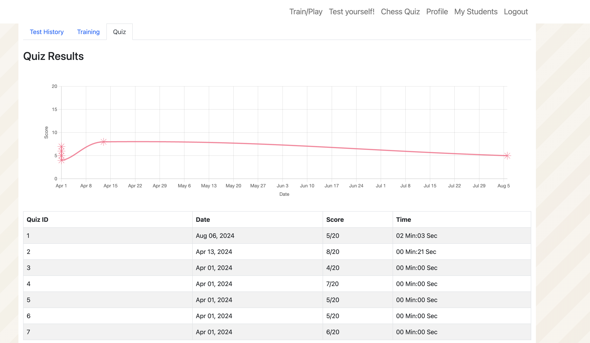
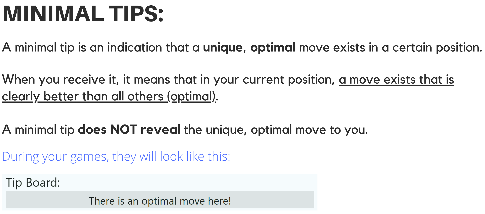
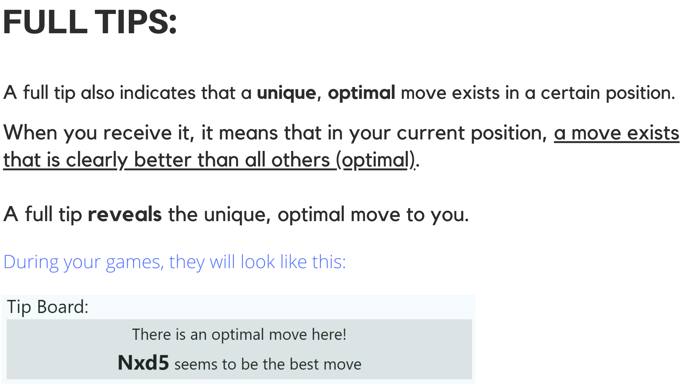

Help at selected moments
The platform determined when a tip would be shown. This design preserved moments of independent search while still giving students structured guidance during training.

Research platform overview
A custom chess-training platform used to study when AI assistance supports learning and when on-demand help weakens the effort that builds skill.
The field experiment
The platform was built for a 12-week field experiment with more than 200 chess-club students. Participants trained on the same custom app, which combined adaptive engine games, AI-generated tips, chess quizzes, test games, and progress dashboards.
The central design question was simple but consequential: should learners control when they receive AI help, or should the system decide when assistance is useful? The answer matters because the same assistance that improves immediate performance can also replace the productive struggle needed for long-term learning.
The platform
The live research app required authenticated student and coach accounts. This public version preserves the platform context, intervention logic, and screenshots so the study can be shared without exposing the original backend or participant data.

Train / play
Students played against a chess engine calibrated to their level. The app identified moments where an optimal move existed, delivered or withheld help depending on the assigned condition, and tracked whether students found the move, followed the tip, or requested additional help.




AI assistance design
Students were randomly assigned to different assistance designs. In the system-regulated condition, the platform automatically provided AI tips at key moments. In the self-regulated condition, students received the same automatic tips but could also click for additional help whenever they wanted.
The platform determined when a tip would be shown. This design preserved moments of independent search while still giving students structured guidance during training.
Students could request assistance at any point. That extra control improved some short-run training outcomes, but it also made it easier to bypass difficult thinking.


Key findings
Both groups improved, but students with on-demand access to AI help learned less than half as much as students whose assistance was system-regulated.
Students whose help was governed by the platform made substantially larger gains after the 12-week training period.
Students who could request extra AI help whenever they wanted improved by less than half as much, despite having more access to assistance.
The learning loss was concentrated when students requested help on tasks inside their Zone of Proximal Development: difficult enough to require effort, but still achievable with the right support.
Students with on-demand help completed fewer training games, reported lower accomplishment, and increased their AI requests over time even while recognizing the risk of over-reliance.
Design implication
AI training systems should not simply maximize access to answers. They should preserve productive struggle when learners are ready to practice, while providing stronger support when tasks fall outside the learner's current reach.